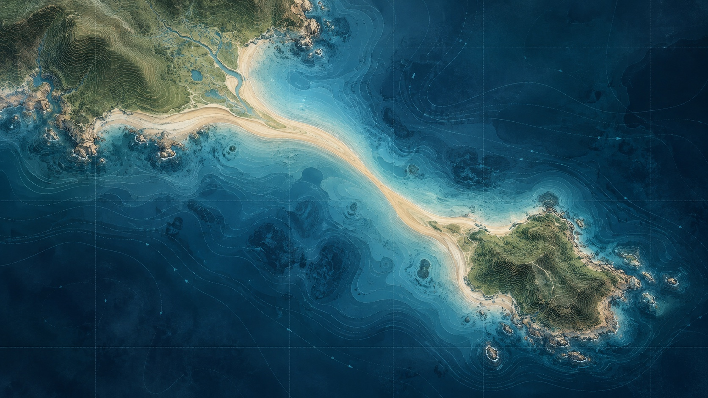

In formation
A new connection
is taking shape.
We’re quietly building a better way for environmental information to move—grounded in evidence, designed for trust.
Stay in the loop
Tombolo / a natural bridge shaped by movement over time
tom·bo·lo
noun
A narrow formation that connects an island to the mainland.
A bridge that emerges from complexity. That idea guides what we’re building.
Our direction
Complex systems deserve a clearer path.
Tombolo is in private development with people who know the environmental data journey firsthand.
Evidence over opacity
Connection over friction
Progress without disruption
Early conversations
Some things are better built together.
If your work depends on environmental information moving cleanly between people, systems, and decisions, we’d like to learn from you.
Start a conversation